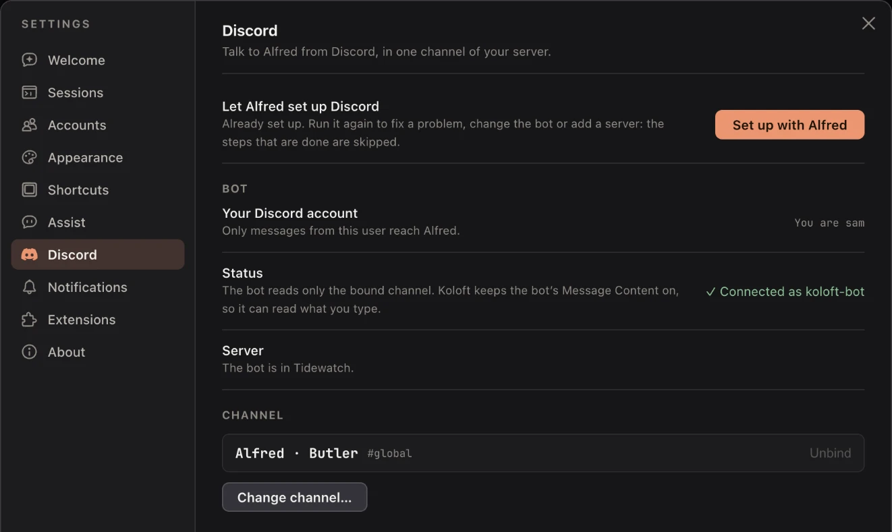

A butler on Discord
Discord is a chat app for your phone and your computer. Your butler, called Alfred until you give it another name, is Koloft's own AI: one Claude, Codex, Muse or Antigravity session on your Mac, first in the sessions list. Give it a Discord channel (a chat room) and you can write to it from your phone too. It reaches your sessions for you: it starts them, reads them, sends them messages, and answers their questions the way you tell it to. Only your butler talks on Discord; your other sessions get no threads or news cards there, only a 🔑 card when one needs a password, a code or a sign-in address from you.
your phone
+-----------------------------+
| the Discord app |
+-----------------------------+
^ |
| v
Discord, on the internet
+-----------------------------+
| your private server |
| one channel, for your |
| butler |
+-----------------------------+
^ |
| v
your Mac
+-----------------------------+
| Koloft, signed in as your |
| bot with the bot's token |
| | |
| channel |
| v |
| your butler |
| | |
| v |
| your sessions |
+-----------------------------+
Nothing runs on a server of ours, and you make no account with us. The words travel through your own private bot. A bot is an account that a program uses, not a person. You make it on Discord, and Koloft signs in as it. Until Koloft has the bot's token, nothing connects.
Set it up
Open Settings ▸ Discord and click Set up with Alfred (the button carries your
butler's name). Your butler starts a helper session in its own folder, which opens the
Discord website in its Workbench browser and does each step it can; you sign in, type your
password and pass the "I am human" checks. Already have a bot? It can use it too. The
steps are:
- Make the app, on the Discord website. An app is Discord's box that holds a bot. Or pick the app you already have.
- Get the bot's token. The token is the bot's password. Koloft reads it from the page itself, so it never passes through the AI, and keeps it in the macOS Keychain (the Mac's locked box for passwords). Once the token is in, Koloft turns on Message Content (Discord's switch that lets a bot read what you type).
- Make a private server, if you have none. A server is your own space in Discord, with channels in it. Only you are in this one.
- Add the bot to your server. The invite asks for the rights the bot needs, making channels among them.
- Make your butler's channel. Koloft makes #global in a category named after your bot, and ties it to your butler.
Koloft also needs to know who you are. If the bot's app is yours alone, Koloft already knows: it is the app's owner. If a team owns the app, send any message in your server, like "hi". It shows up in Settings ▸ Discord with the sender's name. Click This is me (or Not me). After that, Settings ▸ Discord shows your Discord account ("Only messages from this user reach Alfred."), the status ("The bot reads only the bound channel."), the server, and the channel. Click Set up with Alfred again any time to fix a problem: the steps that are done are skipped.

Its channel
Your butler has one channel. Under its name in the sessions list is that channel, or
not on Discord. To pick one, right-click the butler's row ▸
Bind Discord channel…, or click Settings ▸ Discord ▸
Bind a channel…. The dialog lists your server's channels, with a new one on
top that Koloft makes for you (#global, or #global-2 when that
name is taken). Once it has one, the same menu has
Change Discord channel… and Unbind Discord
(only Discord goes; the butler and its conversation stay).
While your butler has a channel, it opens as soon as Koloft connects to Discord, and it never goes to sleep the way an idle session does.
Coming from an older Koloft, where each folder could have its own channel? The Global
channel, or else the one you wrote in last, becomes your butler's. The other channels are
left as they were, and no longer read. The old session threads under your butler's channel
are archived once. Write in one and Koloft answers
Koloft no longer reads this thread. Talk to Alfred in #global.
From your phone
Talk to your butler
Write in the channel. Your message reaches your butler with "[Discord]" in front. It gets a ⏳ while it waits its turn, and a ✅ once it is in. If the butler is not open, your first message starts it; the ⏳ stays until it is ready. Files you attach are saved on your Mac for 7 days, and the butler is told where they are. Everything your butler writes back comes to the channel, and while it works the channel shows the bot typing.
When your butler asks you something, its card reads
❓ Alfred is waiting for you., with a button per option when the question has
options.
Your sessions
Your sessions do not post to Discord. When your butler hands a session work, Koloft hands the session's reply back to the butler once its turn ends, and the butler tells you. A session's question shows only at the Mac: ask your butler what it is waiting on, and tell it what to pick. It reads the session's screen and answers, or presses the keys, as you would at the Mac. See what your butler can do.
Passwords and codes
Some things only you know, and they should not sit in a chat. When a session needs one, a 🔑 card comes to your butler's channel, headed with the session's name and its folder:
-
🔑 fix-login · tidewatch asks for your sudo password(the Mac's admin password), with the command it wants to run -
🔑 <session> · <folder> asks you to fill in a field on a web page, with the page and the field -
🔑 <session> · <folder> needs the address a sign-in ends on, with the sign-in address to open on your phone
Press Enter it and Discord opens a form. What you type goes to Koloft, which
passes it straight on: to sudo, into the page's field (and submits the form),
or to the session's machine, which opens the address. The session never sees it, and it
does not stay in the chat. The card then ends with ✅ Passed on., or
⌛ Koloft stopped waiting. if you did not answer in time. See
how the agent asks.
Slash commands
A slash command is a command you type that starts with /. Discord shows three
once your butler has a channel, and each goes to your butler:
-
/run— type a command into your butler, like/contextor/model haikufor a butler on Claude; each agent has its own commands /clear— start a new conversation with your butler-
/compact— shrink your butler's conversation; you may say what to keep
A plain message that starts with /, with no file attached, is typed into your
butler the same way. A command waits until the butler's turn ends, for up to 10 minutes.
What it printed comes back to the channel.
Files and pictures out
Your butler can send you files. It runs
koloft discord send <file>... -- "<text>" with each file's full
path, and the text part may be left out. Each file can be up to 20 MB (megabytes). Discord
takes 10 files and 25 MB per message, so a bigger batch goes out as several messages.
It can also send you a picture of a page with
koloft discord shot <HTML file or web address>. Koloft opens the page
out of sight and takes a picture of the whole page; a page taller than one picture comes
as several, top to bottom, at most 10.
A message you send while Koloft is closed gets one answer: "Koloft was offline, this message was not delivered."
What Discord sees
Everything goes to Discord, at discord.com/api/v10 and
gateway.discord.gg, and files you attach come down from Discord's file
server. This is what leaves your Mac:
| what | what is in it |
|---|---|
| butler replies | Every reply your butler writes, whole, and its own question cards. |
| files and pictures | What your butler sends with koloft discord send or shot. |
| 🔑 cards | The session's name and folder, and what it asks for: the command for sudo, the page and field, or the sign-in address. Never what you type into the form. |
| command results |
What /run, /clear or /compact printed in
your butler.
|
| typing | While your butler works, a typing signal every 8 seconds. |
| errors | A short note when something goes wrong. |
Long text is split into several messages, not cut short. Only a button label gets cut.
- Only your account, the one Settings ▸ Discord shows, is heard. Other people and bots are ignored, and their commands and button presses refused.
- Discord still sends every message in the server to your Mac. Koloft drops the rest there, and none of it goes back out.
- If a Discord team owns the bot's app, then until you pick yourself, the last message anyone wrote in the server shows up in Settings ▸ Discord, so you can say whether it is you.
- The token signs the bot in before you bind a channel. Until you bind one, it ignores messages and shows no slash commands.
What it won't do
-
post your whole transcript(no session's transcript, the written record of a session: only what your butler writes, and the cards above) -
post your sessions' news(sessions get no threads, news cards or typing; ask your butler how one is doing) -
run two Kolofts on one data folder(the second one waits for the bot; a Koloft on another Mac with the same token is not stopped, and both get every message)
Next page → Install, update, what it talks to